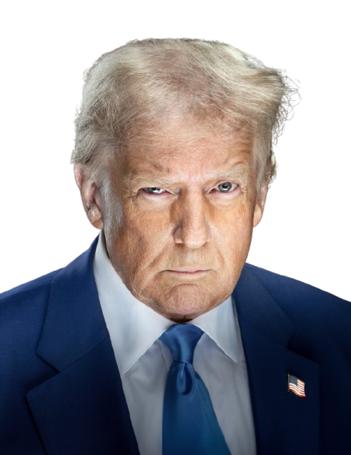

J.D. VANCE
J.D. Vance je americký spisovatel, investor a politik, známý svou autobiografickou knihou Hillbilly Elegy, která popisuje život pracující třídy v USA. V roce 2022 byl zvolen senátorem za stát Ohio za Republikánskou stranu. Zaměřuje se na témata jako ekonomická příležitost, kulturní otázky a obnova amerického průmyslu.

Donald J. Trump
Donald Trump je americký podnikatel, mediální osobnost a politik, který v letech 2017–2021 působil jako 45. prezident USA. Proslul svou kontroverzní rétorikou, populistickým stylem a silnou polarizací společnosti. V roce 2024 znovu kandidoval a v roce 2025 obhájil prezidentský úřad, čímž zůstává jednou z nejvýraznějších a nejrozporuplnějších postav americké politiky.
Elon Musk
Elon Musk je miliardářský podnikatel a CEO společností jako Tesla, SpaceX a X (dříve Twitter). Je známý pro své inovace v oblasti elektromobilů, kosmického průzkumu a AI, a jeho cílem je kolonizace Marsu a revoluce v energetice. Musk je jednou z nejvlivnějších, ale i nejkontroverznějších osobností dnešní doby.